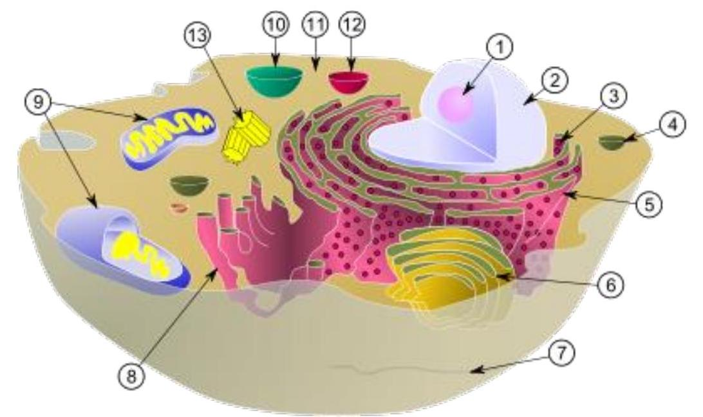
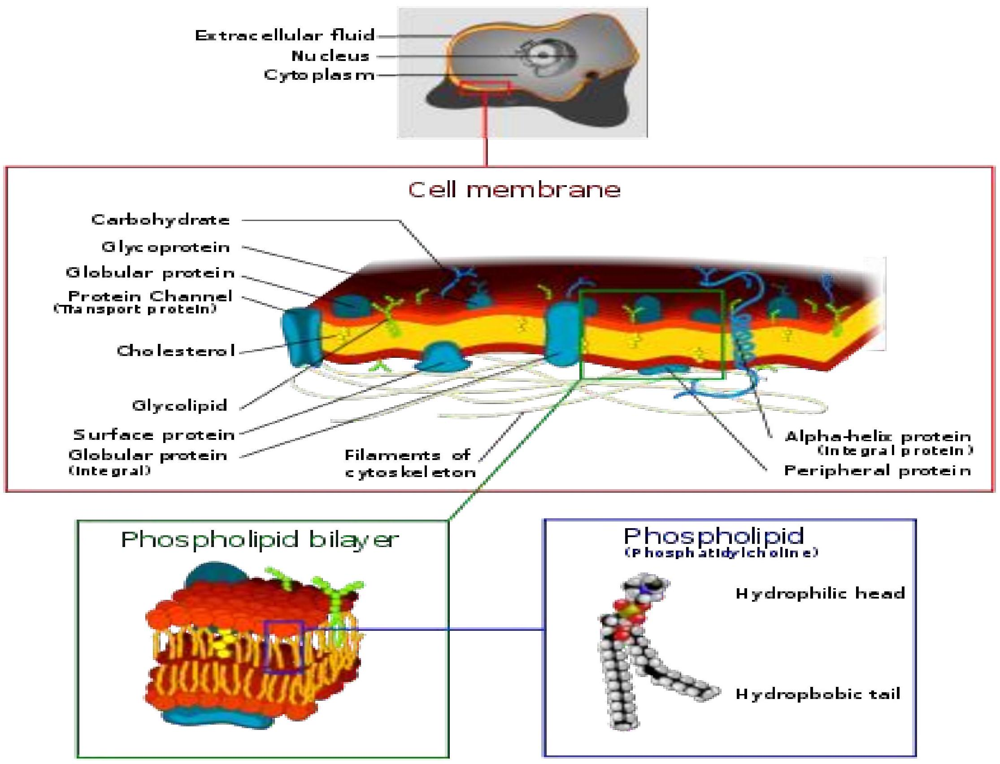

CELL MEMBRANE, CYTOSKELETON AND ORGANELLES

Cell

CELL MEMBRANE
- The cell membrane is selectively-permeable( ions and organic molecules), controls the movement of substances in and out of cells.
- It consists of the phospholipid bilayer, consisting of hydrophobic tails and hydrophilic heads with embedded proteins, which are involved in a variety of cellular processes such as cell adhesion, ion conductivity and cell signaling.
- The plasma membrane also serves as the attachment surface for the extracellular glycocalyx and cell wall and intracellular cytoskeleton
Function
- The cell membrane surrounds the protoplasm of a cell and, in animal cells, physically separates the intracellular components from the extracellular environment.
- Fungi, bacteria and plants also have the cell wall which provides a mechanical support for the cell and precludes passage of the larger molecules.
- The cell membrane also plays a role in anchoring the cytoskeleton to provide shape to the cell, and in attaching to the extracellular matrix and other cells to help group cells together to form tissues.
- The barrier is differentially permeable and able to regulate what enters and exits the cell, thus facilitating the transportof materials needed for survival.
- The movement of substances across the membrane can be either passive, occurring without the input of cellular energy, or active, requiring the cell to expend energy in moving it. The membrane also maintains the cell potential.
A typical animal cell. Within the cytoplasm, the major organelles and cellular structures include:
- nucleolus
- Mitochondria
- nucleus
- Vacuole
- ribosome
- Cytosol
- vesicle
- Lysosome
- rough endoplasmic reticulum
- Centriole
- Golgi apparatus
- cytoskeleton
- smooth endoplasmic reticulum
- The cytoplasm has three major elements
- cytosol
- organelles
- inclusions
- 1) nucleolus (2) nucleus (3) ribosome (4)vesicl e (5) rough endoplasmic reticulum (6) Golgi apparatus (7)cytoskeleton (8) smooth endoplasmic reticulum (9) mitochondria (10)vacuole (11) cy tosol (12) lysosome (13) centriole.
Cytosol
- Cytosol makes up about 70% of the cell volume and is composed of water, salts and organic molecules.
- The cytoplasm also contains the protein filaments that make up the cytoskeleton, as well as soluble proteins and small structures such as ribosomes
- The inner, granular and more fluid portion of the cytoplasm is referred to as endoplasm.
nucleolus
- This is a non-membrane bound structure composed of proteins and nucleic acids found within the nucleus Ribosomal RNA (rRNA) is transcribed and assembled within the nucleolus
Neucleus
- A membrane enclosed organelle found in eukaryotic cells .
- It contains most of the cell's genetic material organized as multiple long linear DNA molecules in complex with a large variety of proteins such as histones, to form chromosomes.
- The genes within these chromosomes are the cell's nuclear genome
- The function of the nucleus is to maintain the integrity of these genes
- To control the activities of the cell by regulating gene expression - control center of the cell.
- The main structures making up the nucleus are the nuclear envelope a double membrane
Ribosomes
- components of cells that make proteins from all amino acids
- DNA is used to make RNA, which, in turn, is used to make protein
Vesicle
- A vesicle, like liposome can be visualised as a bubble of liquid within another liquid, a supramolecular assembly made up of many different molecules.
- More technically, a vesicle is a small membraneenclosed sac that can store or transport substances.
Rough endoplasmic reticulum
- synthesize proteins
- smooth endoplasmic reticulum synthesize lipids and steroids, metabolize carbohydrates and steroids, and regulate calcium concentration, drug detoxification, and attachment of receptors on cell membrane proteins.
- Sarcoplasmic reticulum solely regulate calcium levels.
Golgi body or the Golgi complex
- an organelle found in most eukaryotic cells
- The Golgi apparatus processes and packages macromolecules, such as proteins and lipids after their synthesis and before they make their way to their destination;
- it is particularly important in the processing of proteins for secretion.
a mitochondrion
- is a membrane-enclosedorganelle found in most eukaryotic cells These organelles range from 0.5 to 10 micrometers ($\mu \text{m}$) in diameter.
- described as "cellular power plants" because they generate most of the cell's supply of adenosine triphosphate (ATP), used as a source of chemical energy
- Also involved in a range of other processes, such as signaling, cellular differentiation, cell death, as well as the control of the cell cycle and cell growth.
Vacuole
- membrane bound organelle are filled with water containing inorganic and organic molecules including enzymes in solution or engilfed solids
- Vacuoles are formed by the fusion of multiple membrane vesicles and are effectively just larger forms of these.
Functions of vacuoles
- Isolating materials that might be harmful or a threat to the cell
- Containing waste products
- Maintaining internal hydrostatic pressure or turgor within the cell
- Maintaining an acidic internal pH
- Containing small molecules
- Exporting unwanted substances from the cell
Lysosomes- suicide bags (Autolysis)
- cellular organelles which contain acid hydrolase enzymes to break up waste materials and cellular debris.
- Lysosomes digest excess or worn-out organelles, food particles, and engulfedviruses or bacteria.
- Lysosomes fuse with vacuoles and dispense their enzymes into the vacuoles, digesting their contents via the use hydrolytic enzymes
Centriole
- centriole is a barrel-shaped cell structure-found in most animal eukaryotic cells, though absent in higher plants and most fungi.
- The walls of each centriole are usually composed of nine triplets of microtubules (protein of the cytoskeleton).
- A pair of centrioles, arranged perpendicularly and surrounded by an amorphous mass of dense material (the pericentriolar material0 constitutes the compound structure known as the centrosome
- Centrioles are involved in the organization of the mitotic spindle and in the completion of cytokinesis
CYTOSKELETON
- is a cellular "scaffolding" or "skeleton" contained within the cytoplasm and is made out of protein.
- The cytoskeleton is present in all cells; it was once thought to be unique toeukaryotes, but recent research has identified the prokaryotic cytoskeleton.
- It has structures such as flagella, cilia and lamellipodiaand plays important roles in both intracellular transport (the movement of vesicles and organelles, for example) and cellular division
- Eukaryotic cells contain three main kinds of cytoskeletal filaments, which are microfilaments, intermediate filaments, and microtubules.
- The cytoskeleton provides the cell with structure and shape, and by excluding macromolecules from some of the cytosol it adds to the level of macromolecular crowding in this compartment